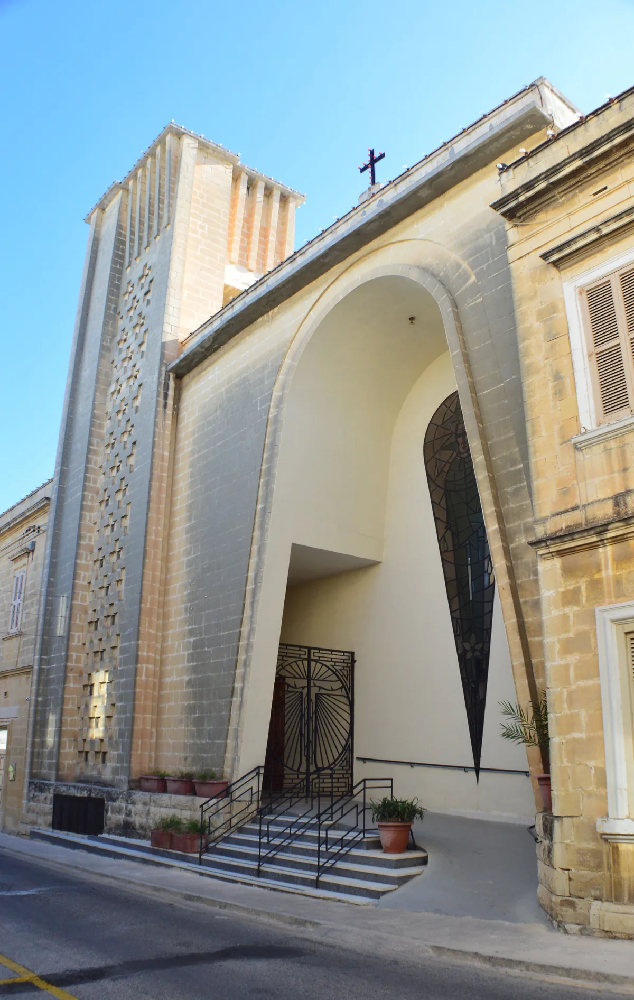
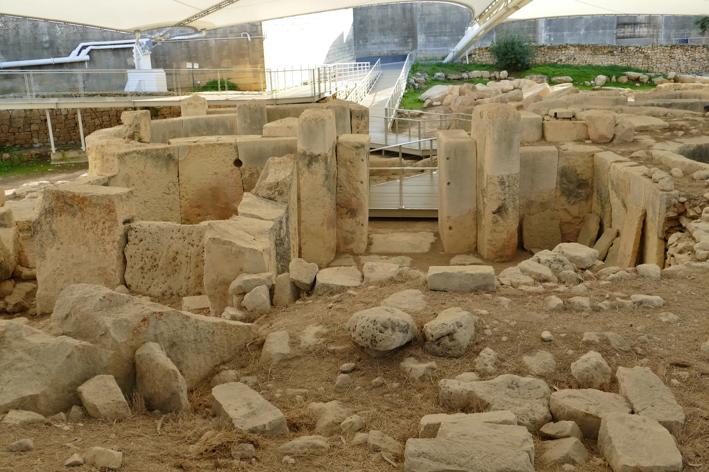

Misraħ ir-Repubblika
The Annunciation parish church is recorded at this square. Use it as a civic landmark; the Augustinian church in the opening photograph is a separate building.
National heritage inventory ↗A parish square, neighbourhood addresses and a prehistoric complex: Tarxien rewards a closer look at each. Start with the place people live in, then make time for the archaeology.
An independent locality. Paola, Fgura and Santa Luċija remain separate neighbours.

Ħal Tarxien is a council in its own right in the Port Region. These are useful reference points for a visit, rather than boundaries between official districts.
The Annunciation parish church is recorded at this square. Use it as a civic landmark; the Augustinian church in the opening photograph is a separate building.
National heritage inventory ↗Misraħ tas-Suq, Triq il-Kbira and Triq Lanzon appear in Tarxien's food-licence records. Checking a specific address gives a more useful starting point than treating the whole locality as one attraction.
Explore the recorded food addresses ↓Heritage Malta places the prehistoric complex on this street. Plan its entrance and visit separately from the parish square and surrounding residential streets.
The site's visitor information ↗The complex comprises four late-Neolithic megalithic structures, later reused in the Early Bronze Age. Look for the contrast between the surviving architecture and the decorated South structure.
Heritage Malta explains that vulnerable original finds are conserved at the National Museum of Archaeology in Valletta. Not everything discovered here remains on site.
The operator describes a wheelchair-accessible walkway within the complex. Check its current access advice and opening information when planning your visit.
Plan with Heritage Malta ↗
For a viewing, a move or a day out, connect the full street address to the services you will actually use.
Route 85 lists Neolitici (358) in Tarxien. Route 88 also lists Neolitici (358) and Tarxien (359). These are examples of coverage, not a complete service list or a nearest-stop promise.
Use the operator's current timetables and alerts for your journey.
Primary HealthCare lists the Tarxien Community Clinic on St Carmel Street. Tarxien falls within the Paola Health Centre catchment; that centre is in Paola.
Confirm the relevant service and appointment arrangements before attending.
Confirm the entrance, floor, stairs or lift, then check your everyday journey from that doorway. Visit the street at a useful time for your routine.
Ask about current grocery options and parking arrangements. Neither can be inferred from the locality's name or these historical photographs.
See the locality map ↓The MTA register records these Tarxien businesses, checked on 14 November 2026. They are unranked examples of restaurant and snack-bar addresses.
A licence record does not verify current trading, menu, opening hours or quality. Confirm those details directly before making plans.
MTA restaurant register ↗Triq il-Kbira, Tarxien
MTA reference RST-30587Triq Lanzon, Tarxien
MTA reference RST-3225612 Misraħ tas-Suq, Tarxien
MTA reference SBR-22571Give the parish setting and the archaeological site their own attention. A visit does not need to treat every landmark as part of one ticket or one walking trail.
The Ħal Saflieni Hypogeum is in neighbouring Paola. Check its own visitor arrangements separately; it is not a Tarxien attraction or an assumed extension of your ticket.
Hypogeum visitor information ↗The parish square and the Augustinian church offer distinct architectural reference points. Check access or worship arrangements before entering.
Follow the operator's current opening and admission information. The historical site photograph is not a guarantee of today's facilities.
Plan from real entrances and current street information. No walking duration, step-free circuit or straight-line itinerary is asserted here.
Explore a map centred on Ħal Tarxien. It loads from OpenStreetMap only when you request it. There is no private-property pin, council-boundary overlay or route drawn by this edition.
Map data © OpenStreetMap contributors. Base-map transport lines are not verified walking directions. Plan any onward ferry crossing as a separate transport leg.
Reviewed 14 November 2026. Current operator information takes precedence when planning. The 2016 and 2019 photographs provide dated context, not current property views or evidence of access, parking or availability.
Nexus Marketplace
See local homes and explore food, shops and everyday places around the neighbourhood.
Mapped places within 2 km of the centre. This can include nearby neighbourhoods.